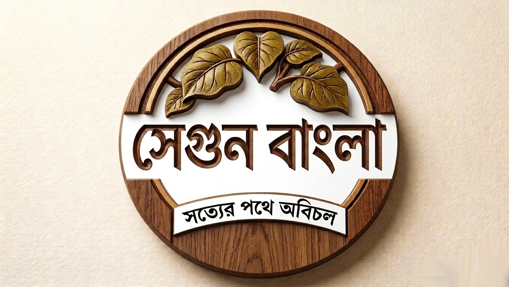
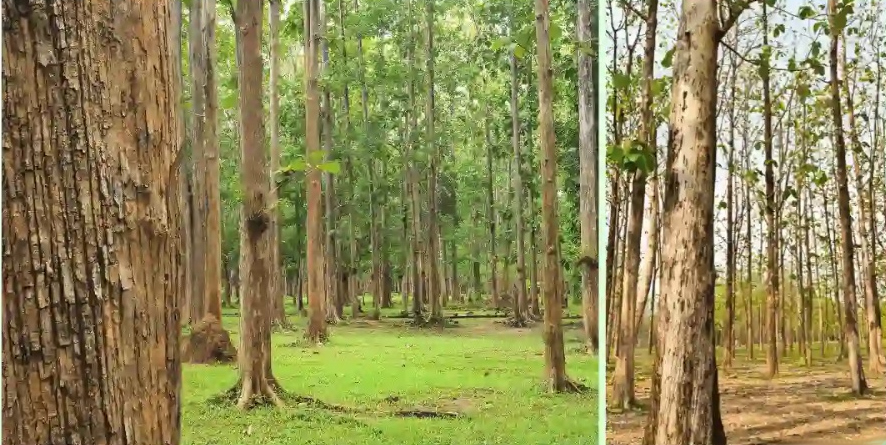
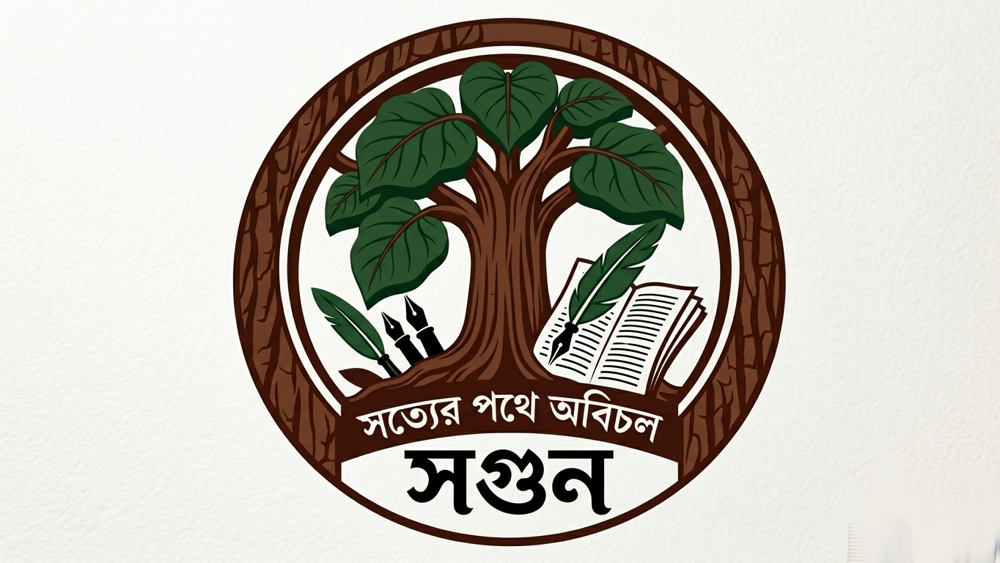
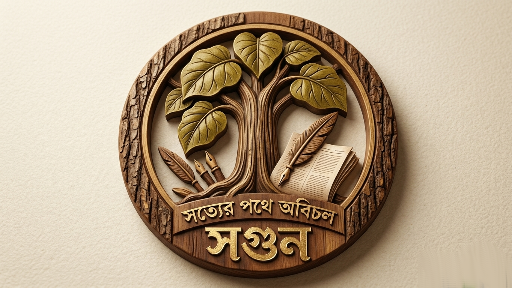
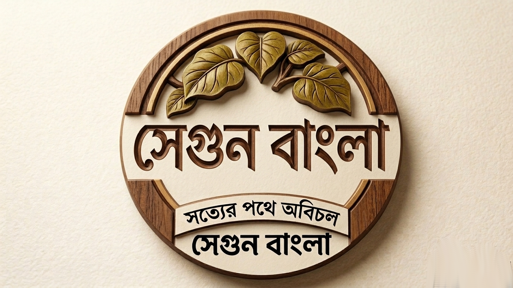
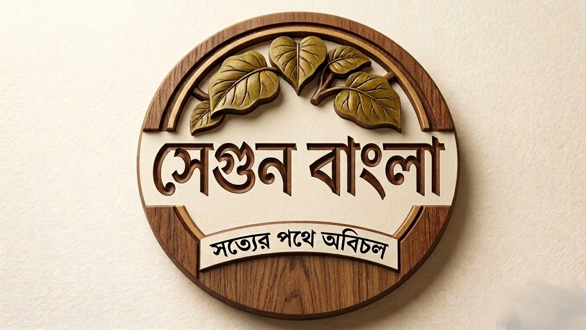

সেগুন বাংলা পত্রিকার লোগো ডিজাইন: একটি ক্রিয়েটিভ জার্নি
সেগুন বাংলা পত্রিকার লোগো বৃত্তান্ত:
পত্রিকাটি সত্যকে প্রতিনিধিত্ব করে। লোগো এমন হতে হবে যাতে বাংলাদেশে স্পষ্ট মানুষজন সত্যের প্রতিনিধিত্বের প্রকাশ সংবাদপত্রটিতে পায়। তাই লোগোটাও সেরকম হবে।
রঙের তত্ত্ব ও প্রতীকী অর্থ
১. মেহেগনি বাদামী (রয়্যাল কালার)
পুরো লোগোটির গঠন এবং বর্ডার গাঢ় মেহেগনি বাদামী রঙে করা হয়েছে। এটি সেগুন কাঠের আভিজাত্য, স্থায়িত্ব এবং সংবাদপত্রের ঐতিহ্যের প্রতীক। প্রিন্টে এই রঙটি টেক্সচার ধরে রাখে এবং অনলাইনে এটি স্বচ্ছ দেখায়।
২. কালচে সবুজ (প্রকৃতি ও বিশ্বাস)
গাছের পাতা এবং পালকের কলমে কালচে সবুজ রঙ ব্যবহার করা হয়েছে। এটি সেগুন গাছ এবং প্রকৃতির সাথে সংযোগ প্রকাশ করে। সবুজের এই গভীর শেডটি অনলাইন স্ক্রিনে যেমন স্বস্তিদায়ক, প্রিন্টেও তেমনি বিশ্বাসযোগ্য।
৩. গাঢ় কালো (পরিচ্ছন্ন বাংলা ফন্ট)
লোগোর নিচের বাংলা ফন্ট "সেগুন বাংলা" এবং স্লোগানটি স্বচ্ছ গাঢ় কালো রঙে লেখা হয়েছে। সাদা কাগজের ব্যাকগ্রাউন্ডে এটি সবথেকে বেশি পাঠযোগ্য এবং প্রিন্ট ও ডিজিটাল—উভয় ক্ষেত্রেই পরিচ্ছন্নতা নিশ্চিত করে।
৪. অফ-হোয়াইট ব্যাকগ্রাউন্ড
আমি এই রঙগুলোকে একটি হালকা অফ-হোয়াইট ব্যাকগ্রাউন্ডের ওপর সাজিয়েছি, যা দেখতে অনেকটা প্রাচীন কাগজের মতো। এটি লোগোর "ক্লাসিক" ভাবটি অক্ষুণ্ণ রাখে এবং সব ধরনের পেপারে এটি সেরা দেখাবে।
টাইপোগ্রাফি: চারুকলা (সুলেখা)
এতে একটি ক্লাসিক এবং শক্তিশালী ভাব আছে যা সংবাদপত্রের মাস্টহেডের জন্য দারুণ। বাংলা ফন্ট "চারুকলা"-এর মজবুত এবং জ্যামিতিক বৈশিষ্ট্যগুলো ব্যবহার করে একটি সম্পূর্ণ নতুন, সোজা এবং দৃঢ় টাইপোগ্রাফি তৈরি করা হয়েছে।
এসব কিছু মিলিয়ে এনো পর্যন্ত আমাদের লোগোটা এরকম হচ্ছে:
এটা সেগুন বাংলার প্রধান লোগো।
লোগোটির উৎপত্তি যেভাবে হলো
প্রতীক বা Symbolism:
- গাছের সার বা অ্যানুয়াল রিংস: সেগুন কাঠের ভেতরের যে গোল গোল রেখা (Annual Rings) থাকে, সেটিকে স্টাইলাইজড করে একটি বৃত্তাকার লোগো তৈরি করা যায়। এটি গভীরতা এবং দীর্ঘস্থায়ী সত্যের প্রতীক।
- একটি সোজা লাইন বা স্তম্ভ: অক্ষরের কোনো একটি অংশকে (যেমন 'গ' বা 'ন'-এর দাড়ি) সেগুন গাছের গুঁড়ির মতো সোজা এবং মজবুত করে দেখানো যেতে পারে, যা "অবিচল" থাকার ইঙ্গিত দেয়।
- কলম ও কাঠ: একটি ফাউন্টেন পেন-এর নিব যদি সেগুন কাঠের টেক্সচার বা গুঁড়ির অবয়ব থেকে বেরিয়ে আসে, তবে তা সংবাদপত্রের সাহসিকতা এবং দৃঢ়তাকে চমৎকারভাবে ফুটিয়ে তোলে।
- বোল্ড এবং শার্প ফন্ট: লোগোর ফন্টটি খুব বেশি পেঁচানো বা চিকন না হয়ে বোল্ড (Bold) এবং জ্যামিতিক (Geometric) হওয়া উচিত।

সেগুন গাছের ধারণা থেকে লোগো তৈরির প্রক্রিয়া
লোগো ইভোলিউশন: প্রথম থেকে শেষ পর্যন্ত
লোগোটি তৈরি করতে মোট ৭টি ভিন্ন ভিন্ন ভার্সন তৈরি করা হয়েছে। প্রতিটি ভার্সনে নতুন কিছু যোগ করা হয়েছে এবং সমস্যাগুলো সমাধান করা হয়েছে।
প্রথম লোগোটি দাঁড়াচ্ছে। কিন্তু এটাতে কাঠের সেই আভিজাত্য প্রকাশ পাচ্ছে না।

সেকেন্ড লোগো আসলো। এবার মনে হচ্ছে একটা থ্রি-ডি (3D) স্টাইল পয়সার মতো ডিজাইন ভালো হবে।

তৃতীয় লোগো: লোগোটি এখন সুন্দর, কিন্তু এটা আই-ক্যাচিং না। ব্যাকগ্রাউন্ড আর টেক্সট কাঠের (wooden style) হয়ে গেছে।

চতুর্থ লোগো: এখনো মনে হচ্ছে উডেন ফ্রেম-এ চেঞ্জ আনতে হবে।

পঞ্চম লোগো: এখন বেটার। কিন্তু লোগোর লেখা ওয়েবসাইটে বোঝা যাবে না।

ষষ্ঠ লোগো: সেগুন বাংলা দুইবার আছে, উপরে ও নিচে। নিচেরটা বাদ দিচ্ছি।

সপ্তম লোগো: অনেক ভালো দেখাচ্ছে। ব্যাকগ্রাউন্ডটা সাদা হলে আরেকটু ফুটে উঠবে।
ফাইনাল ভার্সন:
এটাই আমাদের চূড়ান্ত লোগো যা সবচেয়ে বেশি ব্যালেন্সড এবং প্রফেশনাল দেখাচ্ছে।